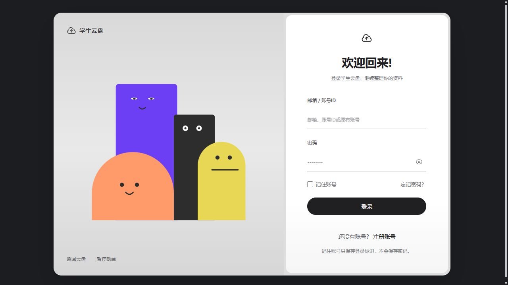

自己的云盘
本地与 OSS/S3 存储接入、个人目录授权和容量限制。文件上传、下载、检索与整理各有清楚的操作反馈。
真实界面 / 虚构演示资料

图片暂时未加载，请选择其他界面，或使用“查看当前原图”打开。
围绕日常资料使用
本地与 OSS/S3 存储接入、个人目录授权和容量限制。文件上传、下载、检索与整理各有清楚的操作反馈。
课程与工作空间分开授权。邀请码可设到期时间和人数上限；课程创建者审批上传权限。
图片、PDF、Markdown、代码、音视频、只读 Office 与 OBJ/STL。私有预览在当前浏览器内展示。
资料问答、长期记忆和文件整理方案。支持的写操作经你确认后执行，未解决反馈可由管理员整理为知识。
当前源码架构
Vue 前端经 Nginx 与 Spring Cloud Gateway 访问服务。平台、内容、智能服务分别管理自己的数据库，通过明确的内部接口协作。
查看独立后端与部署说明 ↗Java 21 · Spring Boot 4.1.2 · Spring Cloud 2025.1.4 · MySQL · Docker
阅读完整 README，了解启动步骤、权限规则和当前能力边界。